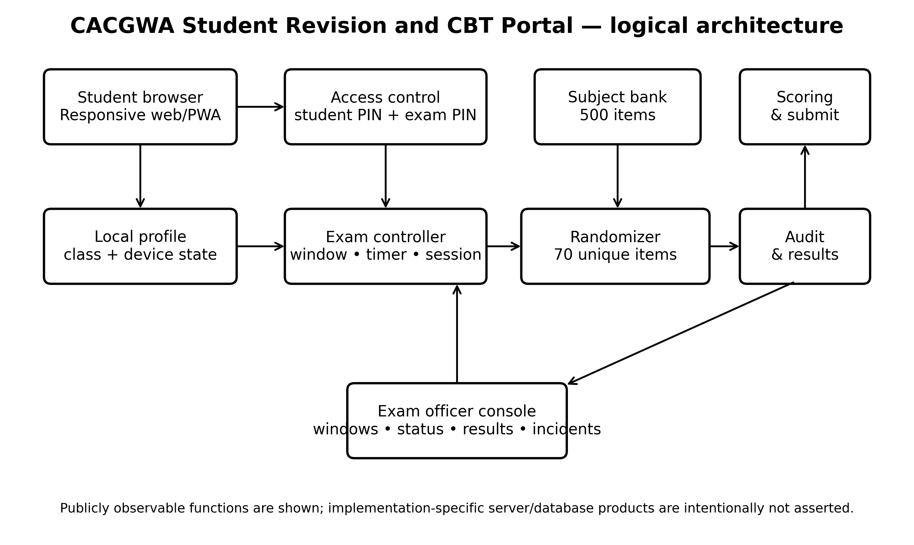
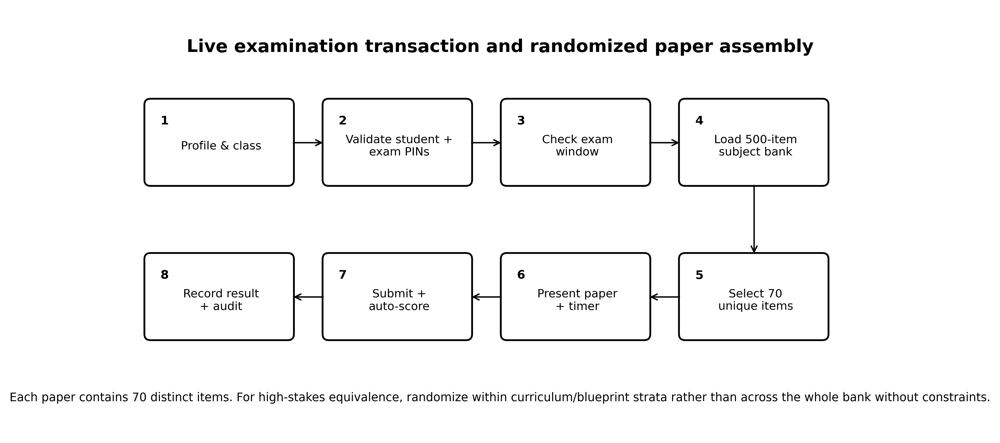
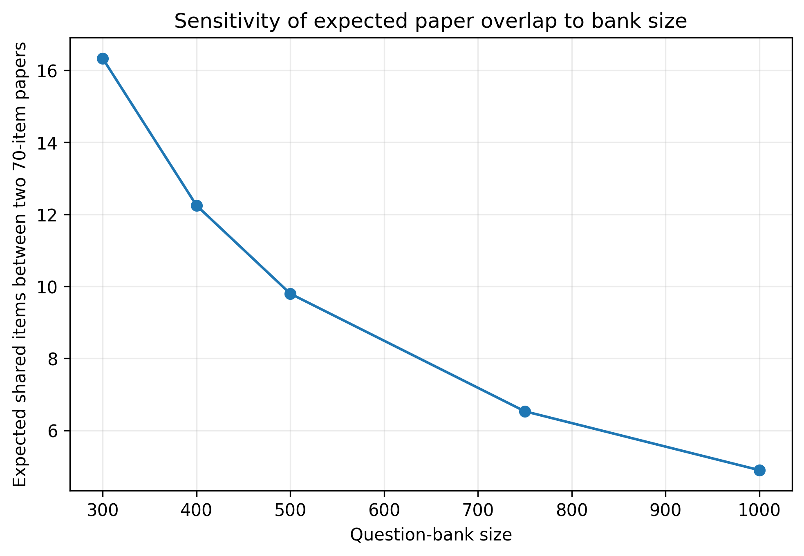

PIONEER PUBLICATION · ACCEPTED ARTICLE · RESEARCH ARTICLE · SETEHEM: TECHNOLOGY × EDUCATION · DESIGN SCIENCE
Design, Simulation, Implementation, and Operational Evaluation of the CACGWA Student Revision and CBT Portal: A 500-Item-Bank Randomized Assessment Model for Senior Secondary School Examinations
1CHIA, S. Kenneth. 2JULIUS, Bitrus Jiwayikwo
chiakenneth01@gmail.com juliusbitrus12@gmail.com
3UKULE, Peter 4Elumeyan, Elizabeth
rev.ukulepeter@gmail.com Elizabethtiti1972@gmail.com
1234Christ Anglican College, Gwagwalada, Abuja, Nigeria
System implementation site: Christ Anglican College, Gwagwalada, FCT Abuja, Nigeria
Corresponding author: chiakenneth01@gmail.com
Article | Volume/Issue | Publication | Identifiers |
|---|---|---|---|
e001 | 1(1) | Pioneer Publication · July 2026 | ISSN: Pending assignment · DOI: Pending registration |
Abstract
Computer-based assessment can reduce manual grading burden, strengthen test security, and improve examination administration when test assembly, access control, item exposure, usability, and infrastructure are engineered as a coherent system. This empirical design-science study evaluated the CACGWA Student Revision and Computer-Based Testing (CBT) Portal implemented at Christ Anglican College, Gwagwalada, Abuja, Nigeria, during the 2025/2026 end-of-session examinations. The field deployment involved 200 students and 15 examination administrators. For each subject, the assessment model used a 500-item objective question bank from which 70 unique questions were randomly selected without replacement for each candidate paper. The implemented portal integrated class- and subject-based revision, practice CBT, a 120-minute live examination, student and examination PIN controls, Progressive Web App (PWA) revision access, automatic objective scoring, and an examination-officer console for examination windows, candidate status, results, and incident management. Exact combinatorial and hypergeometric analysis, complemented by 1,000 Monte Carlo replications of 200 candidate papers, quantified the security properties of the 500-to-70 design. Approximately 4.439 × 1086 unordered 70-item forms are possible; two independently assembled papers share an expected 9.8 items, while the probability of an overlap of at least 20 items is approximately 0.000417. Each item is expected to appear in 28 of 200 candidate papers, with a theoretical exposure standard deviation of 4.91; simulation produced a mean maximum exposure of 43.9 candidates and a mean 95th-percentile pairwise overlap of about 14 items. The live deployment operated effectively as the school examination delivery mechanism. The findings demonstrate that large-bank, per-candidate randomization can produce substantial form diversity and low overlap, while blueprint-constrained assembly, secure randomization, accessibility, auditability, and infrastructure resilience remain essential for defensible high-stakes use.
Keywords: computer-based testing (CBT); item-bank randomization; randomized test assembly; Monte Carlo simulation; assessment security; digital assessment; secondary education; Nigeria
1. Introduction
Assessment is moving from fixed paper forms toward digitally assembled tests that can combine immediate scoring, controlled access, richer item presentation and stronger auditability. In Nigerian secondary education, this transition is especially consequential because students increasingly encounter computerised high-stakes examinations while access to computers and prior CBT experience remains uneven. Abdulkareem and Lennon (2025) reported that computer familiarity was positively associated with performance among Nigerian UTME candidates and documented substantial access differences by school type and location. This makes school-level practice and operationally realistic CBT exposure an equity issue as well as a technology issue.
Computer delivery alone does not guarantee validity or integrity. The 2014 Standards for Educational and Psychological Testing emphasize validity, fairness, reliability, accessibility and appropriate technology use, while the International Test Commission (2006) identifies technological, quality, control and security issues as core to computer- and Internet-delivered testing. At the same time, large-scale evidence shows that CBT can materially change the opportunity structure for examination fraud. Berkhout et al. (2024), studying Indonesia’s national examination transition, found substantial evidence that computerised delivery reduced opportunities for collusive cheating. These findings motivate a design in which candidate authentication, randomized item selection, timed delivery and auditable submissions operate together.
The CACGWA Student Revision and CBT Portal was developed as a school-level response to the need for secure, efficient, and digitally supported assessment. The 2025/2026 implementation involved 200 students and 15 examination administrators and addressed recurring challenges associated with paper-based examinations, including printing burden, result-processing delays, script handling, manual scoring error, and exposure to examination malpractice. By integrating revision, practice CBT, and live examination functions within the same environment, the platform also provides repeated low-stakes exposure to the interface before high-stakes testing, thereby supporting digital familiarity and assessment readiness.
The central engineering feature examined in this paper is the use of a 500-question subject bank with 70 questions randomly selected without replacement for each candidate. Randomization is intuitively attractive for reducing answer copying, but its actual security value depends on the size of the form space, pairwise overlap, item exposure and content balance. The present study therefore combines operational case evidence with exact probability analysis and Monte Carlo simulation instead of merely asserting that randomization “improves security.”
1.1 Aim and objectives
The aim of the study was to evaluate the design, implementation, and operational effectiveness of the CACGWA portal as a secure and scalable school CBT system, with particular attention to the statistical consequences of its 500-item-bank/70-item-paper architecture.
1. Document the functional architecture and user workflow of the deployed revision and live CBT system.
2. Quantify the number of possible examination forms, expected pairwise overlap, and item exposure produced by random 70-of-500 selection.
3. Use reproducible simulation to assess exposure concentration, overlap tails, and the effect of bank size on test-form diversity.
4. Evaluate the design against educational measurement, security, accessibility, and operational-control principles.
5. Evaluate the 2025/2026 field deployment in relation to operational feasibility and scalable examination administration.
1.2 Research questions
1. What system components and controls are required to support revision, practice, live CBT, scoring, and examination administration in the CACGWA context?
2. How much form diversity is produced when each candidate receives 70 questions sampled without replacement from a 500-item subject bank?
3. What levels of pairwise item overlap and per-item exposure should be expected for a 200-candidate examination cohort?
4. Does simple random selection preserve adequate content balance, or is blueprint-constrained randomization preferable?
5. How effectively did the CACGWA portal support the 2025/2026 end-of-session examination workflow in the case-school context?
2. Literature Review and Analytical Framework
2.1 CBT, fairness and digital readiness
Nigerian evidence cautions against assuming that mode of delivery is neutral. Abanobi et al. (2023) compared CBT and paper-and-pencil testing among SSII Economics students and found a statistically significant difference in achievement scores, while test anxiety differences were not significant. Abdulkareem and Lennon (2025) similarly show that familiarity with computers and prior CBT exposure are relevant to performance in Nigeria. The implication for school systems is that revision and practice modules are not peripheral conveniences; they are part of the fairness architecture because they reduce construct-irrelevant variance attributable to unfamiliar navigation or device use.
2.2 Randomization, item exposure and test security
Item-pool security has long been recognized as a central problem in computerized testing. Way (1998) discussed threats to computerized item pools and exposure control; Zhang and Chang (2005) examined the use of multiple pools for security; Yi, Zhang, and Chang (2008) used simulation to investigate organized item theft; and Liu, Han, and Li (2019) demonstrated how compromised-item behavior can be studied through simulation and exposure control. Although the CACGWA system is not a computerized adaptive test, these principles remain directly relevant: broad form diversity, controlled exposure, randomization and auditability reduce predictability and limit the usefulness of pre-sharing fixed forms.
2.3 Design-science perspective
The portal is treated as a socio-technical artifact whose performance depends on the interaction among software, candidate behavior, examination administration, question-bank quality, power and network conditions, and institutional rules. The evaluation therefore integrates three complementary analytical layers: operational field evaluation, mathematical verification of the test-assembly design, and Monte Carlo simulation. This design-science triangulation permits simultaneous assessment of real-world implementation and the statistical properties of individualized paper generation.
3. Materials and Methods
3.1 Study design
A pragmatic design-science case-study design was adopted, combining post-deployment operational evaluation, functional system verification, exact probability modelling, and Monte Carlo simulation. The field setting was Christ Anglican College, Gwagwalada, FCT Abuja, Nigeria. The operational implementation occurred during the 2025/2026 end-of-session examinations and involved 200 students and 15 examination administrators. The evaluation examined the deployed revision and examination workflow, candidate access controls, question-bank assembly, timing and scoring processes, administrative oversight, and the statistical properties of candidate-specific randomized papers.
Study component | Unit/setting | Analytical purpose | Method |
|---|---|---|---|
Field implementation | 2025/2026 end-of-session examination; n = 200 students; n = 15 administrators | Evaluate operational use in a real school examination | Design-science case evaluation |
Functional system verification | Deployed CACGWA revision and CBT workflow | Assess access, timing, paper delivery, scoring, and administration controls | Functional testing and workflow inspection |
Exact probability model | 500-item bank; 70-item paper; 200 candidates | Derive form count, expected overlap, and item exposure | Combinatorial and hypergeometric analysis |
Monte Carlo simulation | 1,000 replications × 200 virtual candidate papers | Characterize overlap tails and exposure concentration | Reproducible simulation; seed 202606 |
Sensitivity analysis | Bank sizes 300, 400, 500, 750, and 1,000 | Assess robustness of test-form diversity to bank size | Comparative analytical modelling |
Table 1. Study design and analytical framework.
3.2 System implementation and functional verification
Functional verification covered the deployed Student Revision and CBT environment, class- and subject-based revision content, Practice CBT, Real Examination, and the Exam Officer pathway. The live examination was configured for 120 minutes and incorporated PWA-enabled revision access, locally retained student profile/class information, a student access PIN plus a fresh examination PIN, examination-window control, candidate-status monitoring, submitted results, and incident/malpractice records. Digital Technologies and Solar PV Installation were among the implemented revision and live-examination subjects. These functions defined the operational architecture evaluated in the study.
3.3 Question-bank and paper-assembly model
For each configured subject, the implemented examination specification comprised a bank of 500 typed objective questions. A candidate paper contained 70 distinct questions sampled without replacement. Let N = 500 denote bank size and n = 70 denote paper length. If all items are eligible and order is ignored, the number of possible forms is C(N,n). For a fixed item, the probability of appearance on a candidate paper is n/N = 0.14. For two independently assembled papers, their shared-item count X follows a hypergeometric distribution, X ~ Hypergeometric (N = 500, K = 70, n = 70), giving E[X] = nK/N = 9.8.
Parameter | Value | Rationale / operational role |
|---|---|---|
Subject item bank | 500 items | Large item pool for form diversity and exposure control |
Candidate paper length | 70 unique items | Configured 2025/2026 examination paper length |
Sampling | Random without replacement | Prevents within-paper duplicate items |
Main examination time | 120 minutes | Configured live-examination duration |
Field cohort used for simulation | 200 candidates | Matches the 200-student field deployment |
Replications | 1,000 | Stabilizes distribution summaries while remaining reproducible |
Random seed | 202606 | Full reproducibility of Monte Carlo outputs |
Table 2. Core assessment and simulation parameters.
3.4 Acceptance criteria
Engineering acceptance criteria were specified before interpreting the simulation: (a) every candidate receives exactly 70 distinct items; (b) exact duplicate forms are practically impossible for a 200-candidate cohort; (c) mean pairwise overlap remains approximately 10 items or lower; (d) the 95th percentile of pairwise overlap remains no greater than 15 items in typical runs; and (e) exposure is distributed across the bank rather than collapsing onto a small subset of questions. Content validity was treated separately from security: simple random sampling can satisfy diversity criteria while still producing uneven domain representation, so a blueprint-constrained sampler is evaluated as a design recommendation.
3.5 Statistical analysis
Exact combinatorial and hypergeometric calculations were used for form counts and overlap probabilities. Item exposure for a fixed item under simple random sampling was modelled as Y ~ Binomial(200, 0.14), giving E[Y]=28 and SD[Y]=4.91. Monte Carlo simulation generated 200 independent candidate forms per replication, each by random sampling without replacement from 500 items; pairwise overlaps were computed for all 19,900 candidate pairs. Exposure summaries were calculated over all 500 items. A separate 100,000-paper multivariate-hypergeometric simulation examined content imbalance under a hypothetical five-domain bank of 100 items per domain, with an ideal balanced target of 14 items per domain.
3.6 Ethical, privacy and security considerations
The study reports aggregate operational information from a routine institutional school assessment and does not disclose identifiable student records, individual scores, credentials, or security-sensitive administrative details. The simulation used synthetic candidate-paper assemblies only. Examination data were handled according to institutional procedures, and publication reporting was restricted to non-identifiable aggregate information. Security-sensitive elements such as credentials, PIN-generation secrets, database schemas, and privileged administrative endpoints are intentionally excluded from the manuscript.
4. System Design, Technologies and Implementation Techniques
4.1 Functional architecture
The portal integrates preparation and assessment in one workflow. Students can revise by class and subject, practise with diagram-based questions, retain a local profile and enter a live examination only when an examination window is open and PIN checks are satisfied. Administration is separated through an officer console. This role separation is important because the ability to open/close windows, inspect candidate status and review submissions should not be available in the candidate context.

Figure 1. Logical architecture of the CACGWA Student Revision and CBT Portal, showing the functional layers for candidate access, test assembly, scoring, auditing, and examination administration.
4.2 Technology and technique matrix
Layer | Technology / technique | Function | Implementation status |
|---|---|---|---|
Presentation | Responsive web interface (HTML/CSS/JavaScript class) | Cross-device student and staff interaction | Deployed responsive web interface |
Progressive web capability | PWA caching for revision content | Supports revision access after the first successful visit | Implemented for revision access |
Client state | Device-local student profile and class | Reduces repeated identity/class entry | Implemented in student workflow |
Authentication | Student access PIN + fresh exam PIN | Two-step gating before live exam | Implemented dual-PIN access control |
Scheduling | Exam window control + timer | Restricts when live paper may be loaded; enforces session duration | Implemented exam-window and 120-minute timing control |
Assessment engine | Subject filtering + random sampling without replacement | Constructs individualized 70-item papers from a 500-item bank | Implemented 500-item bank with 70-item sampling |
Scoring | Automatic objective-item marking | Automates objective-item marking and result computation | Implemented automatic objective scoring |
Administration | Exam officer console | Manages examination windows, candidate status, results, and incident records | Implemented examination-officer control functions |
Security technique | Per-candidate form randomization | Reduces value of adjacent answer copying and fixed-form leakage | Implemented and quantitatively evaluated |
Security hardening | Cryptographically secure PRNG; TLS; server-side authorization; rate limiting; immutable logs | Strengthens unpredictability, confidentiality, authorization, and auditability for higher-stakes use | Recommended for higher-stakes scaling |
Table 3. Technologies, tools, techniques, and control functions in the CACGWA portal architecture.
4.3 Live examination transaction

Figure 2. Live examination workflow and candidate-specific randomized paper assembly.
4.4 Randomization algorithm
A minimal secure test-assembly procedure is shown below. The important properties are subject scoping, eligibility filtering, without-replacement sampling, server-side persistence of the selected item identifiers for audit/recovery, and a candidate/session binding that prevents re-rolling the paper after the examination begins.
01 eligible_items ← QuestionBank.filter(subject = candidate.subject, active = TRUE) |
|---|
Algorithm 1. Reference randomized test-assembly and session-persistence procedure. This pseudocode is implementation-neutral.
4.5 Question-bank governance
A large bank increases security only if the items themselves are instructionally valid. For publication-grade use, each subject bank should carry at least: item ID, class, subject, curriculum objective, content domain, cognitive level, stem, options, keyed answer, explanation/rationale where appropriate, media dependency, difficulty estimate when available, item status, author/reviewer, version and last-review date. Duplicate and near-duplicate items should be flagged before activation. High-stakes forms should preferably be assembled with blueprint constraints so every candidate receives equivalent domain coverage rather than purely unconstrained random draws.
5. Results
5.1 Operational field validation
The CACGWA portal was used as the live examination delivery mechanism during the 2025/2026 end-of-session examinations involving 200 students and 15 examination administrators. Operational validation confirmed candidate authentication, timed examination delivery, individualized paper assembly, automatic objective scoring, submission capture, candidate-status monitoring, and examination-officer oversight. The system performed effectively in the case-school environment and supported the complete revision-to-examination workflow required for the sitting. These field results establish successful operational implementation, while the analytical results below quantify the form-diversity, overlap, and item-exposure properties of the configured 500-to-70 assessment model.
5.2 Exact form-space and overlap results
Metric | Value | Interpretation |
|---|---|---|
Possible unordered 70-item forms | 4.43901e+86 | log10 = 86.647 |
Probability a particular item appears on one paper | 0.140 | 14.0% |
Expected shared items for two papers | 9.80 | 14.0% of each 70-item paper |
P(pair overlap ≥ 15 items) | 0.045121 | 4.512% |
P(pair overlap ≥ 20 items) | 0.000417472 | 0.04175% |
Approx. probability of any exact duplicate among 200 papers | 4.483e-83 | Birthday-bound approximation; negligible |
Expected exposure per item across 200 candidates | 28.0 | 28 candidate papers |
Theoretical exposure SD | 4.91 | Binomial approximation |
Table 4. Exact analytical properties of the 500-item-bank/70-item-paper design.
5.3 Monte Carlo overlap and exposure
Simulation statistic | Result | Interpretation |
|---|---|---|
Mean pairwise overlap across replications | 9.800 | SD across replications 0.020 |
Mean 95th-percentile pairwise overlap | 14.00 | Typical 95th percentile ≈ 14 items |
Mean maximum pairwise overlap per 200-candidate run | 21.69 | 95th percentile of run maximum = 24 |
Mean minimum item exposure per run | 14.19 | Observed range across runs 9–18 candidates |
Mean maximum item exposure per run | 43.88 | 95th percentile = 48; range 39–51 |
Mean SD of item exposure | 4.907 | Closely matches theoretical SD 4.91 |
Table 5. Monte Carlo results from 1,000 independent 200-candidate examination replications (seed 202606).

Figure 3. Distribution of pairwise item overlap in a representative 200-candidate simulated examination.

Figure 4. Item exposure distribution for one representative 200-candidate simulated examination.
5.4 Content-balance risk under unconstrained randomization
Pure randomization is strong for diversity but does not guarantee equivalent content coverage. In a hypothetical bank divided evenly into five content domains (100 items each), the target balanced paper would contain 14 items per domain. Across 100,000 simulated simple-random papers, 72.7% had at least one domain deviating from 14 by four or more items, and 50.4% deviated by five or more. This is not a flaw in the 500-item bank itself; it shows why high-stakes test assembly should combine randomization with a blueprint (for example, randomly selecting 14 of 100 eligible items within each of five domains). Blueprint-constrained randomization preserves diversity while fixing domain counts.
Interpretation |
|---|
5.5 Sensitivity to question-bank size
Bank size | Expected overlap | P(overlap ≥20) | log10 possible forms |
|---|---|---|---|
300 | 16.33 | 1.534e-01 | 69.52 |
400 | 12.25 | 7.917e-03 | 79.28 |
500 | 9.80 | 4.175e-04 | 86.65 |
750 | 6.53 | 8.059e-07 | 99.73 |
1000 | 4.90 | 6.059e-09 | 108.85 |
Table 6. Sensitivity of 70-item paper diversity to subject-bank size.

Figure 5. Expected pairwise overlap falls rapidly as the item bank becomes larger.
6. Discussion
6.1 What the 500-to-70 architecture achieves
The strongest quantitative finding is that the configured bank is already large enough to make exact duplicate papers effectively impossible for a 200-candidate sitting. Approximately 4.439×10^86 unordered forms are possible, vastly exceeding the cohort size. More importantly, security does not depend only on exact duplicates: candidate pairs share an expected 9.8 questions, and overlap of 20 or more items is very uncommon under the model. This means that even when adjacent candidates see some of the same curriculum content, the majority of each paper is different. Such diversity directly reduces the utility of simple answer copying and fixed-form memorization.
6.2 Item exposure and leakage control
A 70-of-500 design exposes only 14% of the bank to any one candidate. Across 200 candidates, each item is expected to appear 28 times. The simulation shows natural exposure variation, with typical run maxima in the mid-40s. That level is not automatically problematic, but it provides a measurable quantity the exam officer can monitor. If particular items become overexposed because of weighting, blueprint scarcity or repeated sittings, exposure caps, rotating sub-pools or multiple calibrated banks can be introduced, consistent with the item-pool security literature (Way, 1998; Zhang & Chang, 2005; Liu et al., 2019).
6.3 Why revision and practice matter for fairness
The CACGWA design is stronger than a stand-alone exam page because the deployed portal supports revision and practice before live testing. This feature addresses an important Nigerian equity concern: students who lack prior computer experience may be disadvantaged by CBT even when they understand the academic content. Abdulkareem and Lennon (2025) found a positive relationship between computer familiarity and UTME performance, and Abanobi et al. (2023) showed that test mode can be associated with performance differences. Rehearsal with the same navigation style therefore supports construct validity by reducing irrelevant interface unfamiliarity.
6.4 Operational effectiveness and field relevance
The 2025/2026 end-of-session deployment confirms that the CACGWA portal functioned as an operational school examination system rather than as a prototype. For the 200-student implementation, candidate access, individualized paper delivery, timing, objective scoring, submission handling, and examination administration operated as intended. This supports the operational feasibility of the integrated revision-and-CBT model in the case-school context. The principal quantitative contribution of the present study concerns test-form diversity, overlap, and exposure; future comparative studies can extend the evidence base by estimating effects on achievement, processing time, candidate experience, and malpractice outcomes.
6.5 Security, availability and resilience
The portal’s two-PIN live-entry logic, time window and officer console establish a basic control structure. For future high-stakes scaling, the architecture should add or formally document: TLS-only traffic, cryptographically secure random selection, server-side authorization for every privileged action, hashed credentials/PINs, replay protection, immutable append-only audit events, device/session fingerprinting limited by privacy principles, rate limiting, automated backups, recovery checkpoints, and power/network contingency plans. Public revision may remain PWA-cached, but live examination integrity generally requires controlled synchronization and authoritative server-side session state.
7. Threats to Validity, Operational Risks and Mitigation
Risk / validity threat | Potential consequence | Mitigation |
|---|---|---|
Single-school case design | Findings may not generalize to schools with different infrastructure, staffing, or candidate profiles | Conduct multi-school replication across contrasting infrastructure and school contexts |
Pure random sampling across all 500 items | Content-domain imbalance between candidate papers | Use blueprint-constrained randomization within topic/cognitive strata |
Weak/random-number implementation | Predictable paper assembly | Use server-side CSPRNG; store nonces and selected item IDs for audit |
Unequal device/computer familiarity | Construct-irrelevant score variance | Mandatory practice sessions and consistent interface across practice/live CBT |
Power or connectivity interruption | Incomplete sessions or inequitable time loss | UPS/solar backup, local network fallback where feasible, resumable server sessions |
Item leakage over repeated sittings | Compromised bank validity | Exposure monitoring, scheduled retirement, rotating calibrated pools, item-analysis review |
Shared PINs or impersonation | Unauthorized access | Candidate-specific credentials, identity verification and login audit trail |
Automatic scoring key errors | Systematic mis-scoring | Dual review of answer keys, version control, post-exam key audit and re-score capability |
Accessibility barriers | Unfair disadvantage to candidates with disabilities | Keyboard operability, readable contrast, scalable text, alternative text for diagrams and documented accommodations |
Table 7. Principal validity and operational risks with recommended controls.
8. Replicable Implementation Protocol
The following protocol converts the case-study design into a reproducible institutional workflow.
1. Curriculum blueprinting: define examinable domains, learning outcomes, and target cognitive levels for every subject and class.
2. Bank construction: create at least 500 uniquely identified, keyed items per subject; attach domain, cognitive level, media, and version metadata.
3. Quality review: subject teachers review stem clarity, distractor plausibility, key correctness, curriculum alignment, diagram legibility, and duplicate or near-duplicate content.
4. Candidate preparation: provide revision and practice CBT using the same navigation conventions as the live system while keeping live questions segregated.
5. Exam configuration: set class, subject, examination window, duration, paper length, eligible bank version, and access credentials; freeze the bank version for the sitting.
6. Candidate launch: validate the student profile, class/subject, student access PIN, and fresh examination PIN before creating the examination session.
7. Paper assembly: select 70 unique eligible items, preferably within blueprint strata; persist the selected items to the candidate session and randomize presentation/order as configured.
8. Response persistence: save responses incrementally and record timestamps sufficient for recovery and audit without exposing answer keys to the client.
9. Submission and scoring: lock the session on submission or timeout, score against the frozen key version, store the result, and write an auditable submission event.
10. Post-exam audit and bank maintenance: reconcile candidate roster and submissions, review incidents and item exposure, conduct item analysis when adequate data accumulate, retire weak or compromised items, and replenish the bank.
9. Conclusion and Recommendations
The CACGWA Student Revision and CBT Portal provides a practical school-level model for integrating preparation, practice, secure live testing, automatic scoring, and examination administration. Its central 500-question-bank/70-question-paper architecture has an exceptionally large combinatorial form space and low expected pairwise overlap. Exact analysis and 1,000 Monte Carlo replications show that the design produces strong candidate-paper diversity and distributes item exposure across the bank. The 2025/2026 end-of-session deployment involving 200 students and 15 examination administrators demonstrated successful operational use of the revision, live-examination, PWA, scoring, and officer-management functions.
For higher-stakes and wider institutional deployment, the recommended next stage is blueprint-constrained randomization, formal documentation of random-number and server-side security controls, immutable examination logging, systematic accessibility testing, resilient power/network arrangements, and periodic item-exposure and psychometric review. Multi-school replication and longitudinal analysis should examine completion, reliability, scoring turnaround, candidate experience, and malpractice outcomes across different infrastructure conditions. The study contributes both a functioning institutional CBT model and a reproducible quantitative framework for evaluating whether question-bank randomization is sufficiently secure, balanced, and educationally defensible.
Declarations
Item | Statement |
|---|---|
Ethics and consent | The study concerned routine institutional examination implementation and reports only aggregate, non-identifiable operational information. The school examination was conducted under institutional authority, and no identifiable student records are disclosed in this publication. |
Funding | The study received no specific external grant funding. |
Competing interests | The author participated in the design and implementation of the CACGWA portal and is affiliated with CHIA TECH SOLUTIONS AND RESOURCES LIMITED. This relationship is declared for transparency. |
Data availability | The principal analytical parameters, equations, simulation seed, and reproducibility specification are provided in the manuscript. Student-identifiable institutional examination records are not publicly released. |
Software / reproducibility | Simulation used Python 3 with NumPy/SciPy-compatible random sampling and hypergeometric calculations. The random seed was 202606. |
AI-assisted tools | AI-assisted language-editing and document-production tools were used during manuscript preparation. The author and editorial team verified the data, calculations, citations, and final text and accept full responsibility for the published content. |
Author contributions | Chia, S. K.: Simulation; design; technology; backend programming; system control. Julius, B. J.: Mathematical permutation codes; system testing; debugging. Ukule, P.: Educational curriculum alignment; ethics; examination malpractice control. Elumeyan, E.: Feasibility analysis; data science. |
Peer review | The article underwent double-blind peer review and was accepted for the CHIATECH JOURNAL Pioneer Publication, Volume 1, Issue 1, July 2026. |
Copyright and licence | © 2026 The authors. Published open access under the Creative Commons Attribution 4.0 International (CC BY 4.0) licence. |
Table 8. Publication declarations, author contribution, and reproducibility statements.
References
Abanobi, C. C. (2022). Comparative analysis of academic achievement scores of secondary school students exposed to Computer-Based Test (CBT) and Paper and Pen Test (PPT) in Economics in Nigeria. Asian Journal of Advances in Research, 16(1), 11–21.
Abanobi, C. C., Agu, N. N., Eleje, L. I., Metu, I. C., Mbelede, N. G., & Ezeugo, N. C. (2023). Effects of Computer-Based Test (CBT) and Paper and Pencil Test (PPT) on academic achievement and test anxiety of secondary school students in Economics. Innovare Journal of Education, 11(1), 35–41. https://doi.org/10.22159/ijoe.2023v11i1.45960
Abdulkareem, Z., & Lennon, M. (2025). Impact of digital divide on students’ performance in computerised UTME in Nigeria. Information Development, 41(4), 1265–1280. https://doi.org/10.1177/02666669231191734
American Educational Research Association, American Psychological Association, & National Council on Measurement in Education. (2014). Standards for educational and psychological testing. American Educational Research Association.
Berkhout, E., Pradhan, M., Rahmawati, Suryadarma, D., & Swarnata, A. (2024). Using technology to prevent fraud in high stakes national school examinations: Evidence from Indonesia. Journal of Development Economics, 170, 103307. https://doi.org/10.1016/j.jdeveco.2024.103307
Christ Anglican College, Gwagwalada. (2026). CACGWA Student Revision and CBT Portal. https://cacgwa.com.ng/portal
International Test Commission. (2006). International guidelines on computer-based and Internet-delivered testing. International Journal of Testing, 6(2), 143–171. https://doi.org/10.1207/s15327574ijt0602_4
Liu, C., Han, K. T., & Li, J. (2019). Compromised item detection for computerized adaptive testing. Frontiers in Psychology, 10, 829. https://doi.org/10.3389/fpsyg.2019.00829
Scheuermann, F., & Björnsson, J. (Eds.). (2009). The transition to computer-based assessment: New approaches to skills assessment and implications for large-scale testing. Office for Official Publications of the European Communities.
Way, W. D. (1998). Protecting the integrity of computerized testing item pools. Educational Measurement: Issues and Practice, 17(4), 17–27. https://doi.org/10.1111/j.1745-3992.1998.tb00632.x
Yi, Q., Zhang, J., & Chang, H.-H. (2008). Severity of organized item theft in computerized adaptive testing: A simulation study. Applied Psychological Measurement, 32(7), 543–558. https://doi.org/10.1177/0146621607311336
Zhang, J., & Chang, H.-H. (2005). The effectiveness of enhancing test security by using multiple item pools (ETS Research Report RR-05-19). Educational Testing Service. https://doi.org/10.1002/j.2333-8504.2005.tb01996.x
Appendix. Reproducible Simulation Specification
The following compact specification reproduces the principal simulation results and provides an implementation-neutral analytical reference for the 500-item-bank/70-item-paper model.
seed = 202606 |
|---|
Publication record
How to cite: Chia, S. K., Julius, B. J., Ukule, P., & Elumeyan, E. (2026). Design, simulation, implementation, and operational evaluation of the CACGWA Student Revision and CBT Portal: A 500-item-bank randomized assessment model for senior secondary school examinations. CHIATECH JOURNAL, 1(1), e001. DOI pending. |
|---|